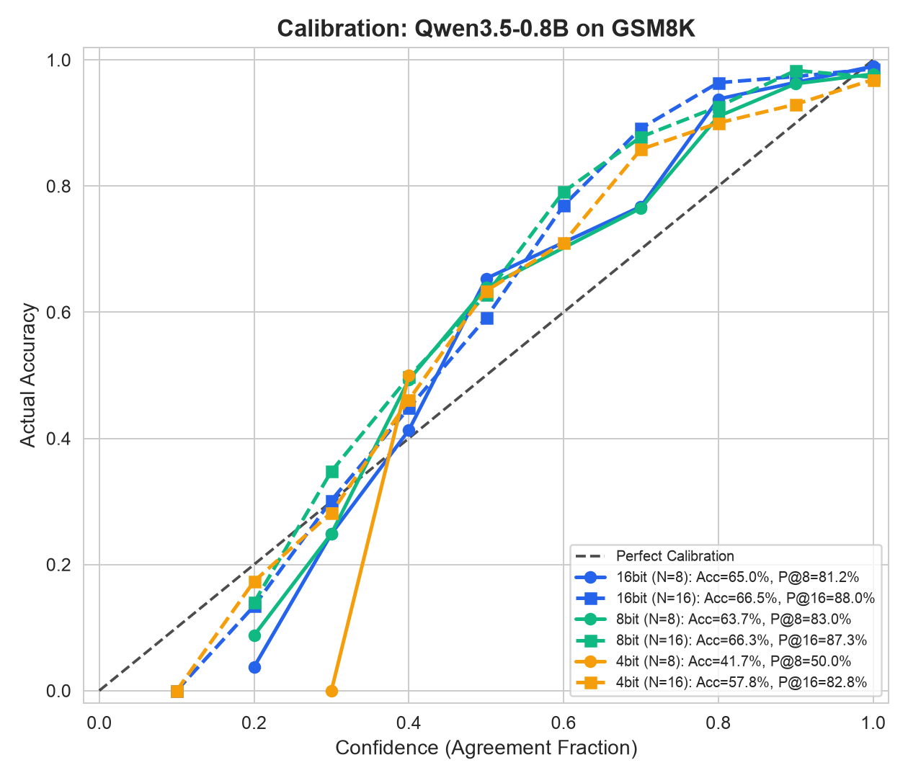
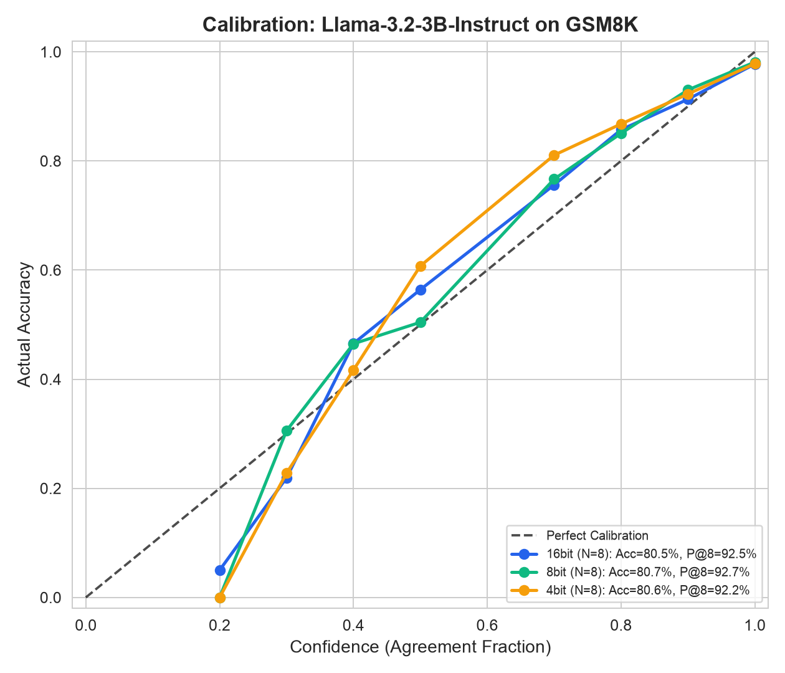

Analyzing the impact of quantization noise on generation diversity and pass@k.
Before testing verifiers, we must understand how quantization affects the base model's raw generation capability. The main findings:
Mathematical reasoning requires rigid logic, making it highly sensitive to extreme (4-bit) quantization.
| Precision | Samples (N) | Accuracy | Pass@k | Confidence | Diversity |
|---|---|---|---|---|---|
| 16-bit | 8 | 65.05% | 81.20% | 58.34% | 3.94 |
| 8-bit | 8 | 63.68% | 83.02% | 56.36% | 4.09 |
| 4-bit | 8 | 55.12% | 73.77% | 51.03% | 4.50 |
| Scaling N=16 | |||||
| 16-bit | 16 | 66.49% | 88.02% | 56.34% | 6.20 |
| 4-bit | 16 | 57.77% | 82.79% | 48.74% | 7.26 |
Extremely robust to quantization due to larger size.
| Precision | N | Accuracy | Pass@k |
|---|---|---|---|
| 16-bit | 8 | 80.52% | 92.49% |
| 8-bit | 8 | 80.74% | 92.72% |
| 4-bit | 8 | 80.59% | 92.19% |
Shows compute scaling benefits at 16-bit.
| Precision | N | Accuracy | Pass@k |
|---|---|---|---|
| 16-bit | 8 | 46.70% | 69.80% |
| 4-bit | 8 | 45.26% | 69.60% |
| Scaling N=16 | |||
| 16-bit | 16 | 51.18% | 79.23% |


Finding: Yes. All three precision curves (16-bit, 8-bit, 4-bit) track tightly together. Quantization does NOT cause false overconfidence.
Unlike open-ended math, 5-option multiple-choice tasks are highly robust to extreme quantization. In fact, quantization noise often improves Pass@k by forcing the model to explore other options.
| Model | Precision | N | Accuracy | Pass@k | Diversity |
|---|---|---|---|---|---|
| Qwen 0.8B | 16-bit | 16 | 59.79% | 90.09% | 2.73 |
| Qwen 0.8B | 4-bit | 16 | 57.25% | 91.24% | 3.19 |
| Llama 1B | 16-bit | 16 | 61.51% | 90.99% | 2.53 |
| Llama 1B | 4-bit | 16 | 61.67% | 89.93% | 2.58 |